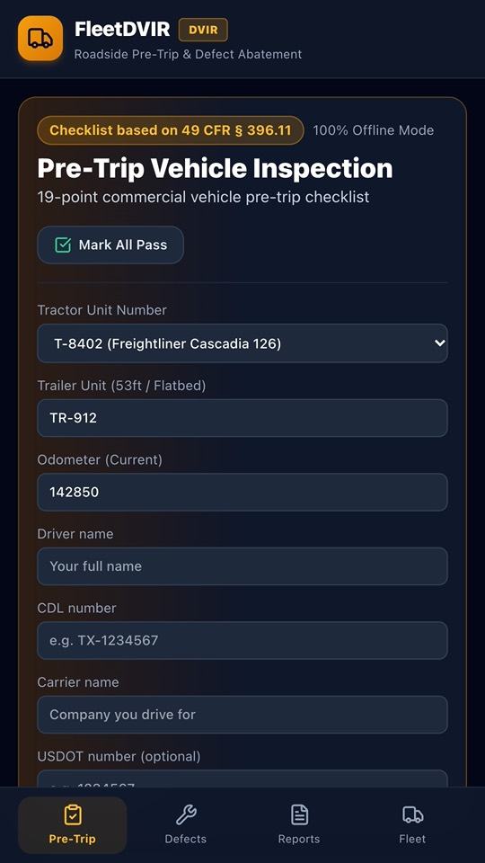
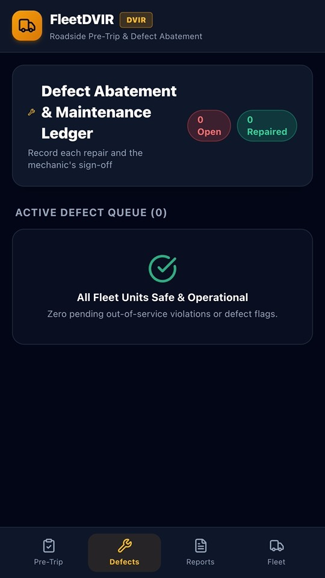
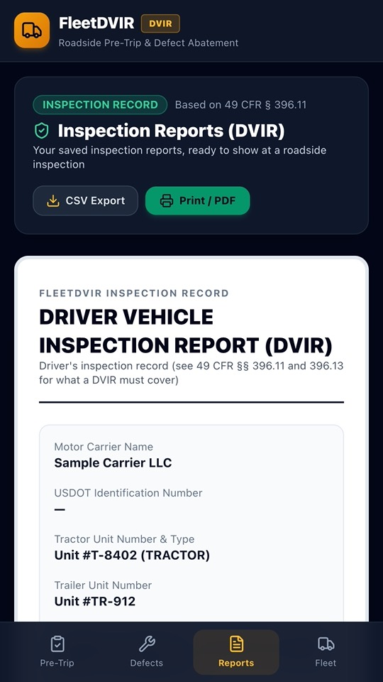
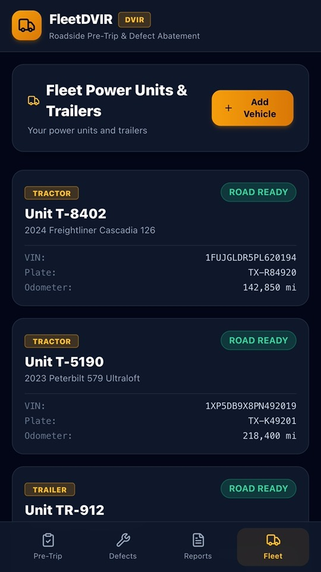

Pre-trip inspections and DVIR reports on your phone
FleetDVIR is a driver vehicle inspection report (DVIR) app for truck drivers, owner-operators and small fleets. Do your pre-trip or post-trip inspection on your phone, record defects and keep a clear report to show when asked.




What it does
Pre-trip and post-trip checklist
- 19 inspection points based on the items listed in 49 CFR § 396.11, including brakes, steering, lights, tires, horn, wipers, coupling devices, wheels and rims, and emergency equipment.
- Mark each item as OK or defective and add a note.
- Record the tractor and trailer units and the odometer reading.
- Air brake leak-down: enter your readings and FleetDVIR works out the leak rate.
- Sign on screen.
Defects and repairs
- Each defect stays on the defects list until it is repaired.
- Record the repair and the mechanic's name when it is fixed.
Reports
- A clear report for every inspection: date, units, driver, checklist results and defects.
- Save or share the report as a PDF from Android's print screen, or share the inspection log as CSV.
Works offline
- Everything is stored on your phone, so it works without signal. No account, nothing uploaded.
Questions
Is FleetDVIR approved by the FMCSA or DOT?
No. FleetDVIR helps you keep inspection records. It is not affiliated with or approved by the FMCSA or the US Department of Transportation, and you remain responsible for inspecting your vehicle and following the rules that apply to you.
Is it an ELD?
No. FleetDVIR does not record hours of service. It is only for vehicle inspections and defects.
Does it need internet?
No. Inspections, defects and reports are stored on your phone and work without signal.
Running a small fleet?
We are looking for a few small fleets to try FleetDVIR and tell us what they need. Email digital.nexus.studios2@gmail.com.
FleetDVIR is not affiliated with or approved by the FMCSA or the US Department of Transportation.
Questions or a feature request? Email digital.nexus.studios2@gmail.com.